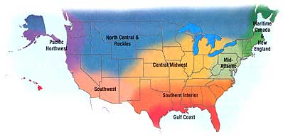
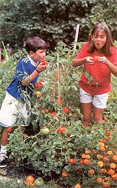

Edited by Carol Mack
June is time to eat big salads. Gather early summer flowers like violets, yarrow and red clover to dry for teas and for tincturing. Harvest culinary and medicinal herbs like lemon balm, mint, French tarragon, summer savory and basil before they go to seed. Eat lots of fresh vegetables and soak up the summer heat. The ground has finally warmed enough to safely set out tender pepper, melon and squash seedlings, as well as any gourd seedlings. Plant green beans, summer lettuces, more oriental greens, broccoli raab and late-season brassicas. Late carrots can be planted now that the first hatch of carrot fly has passed. The empty greenhouse is a great place to start perennials for fall transplanting. July brings the first tender broccoli-so green, so buttery-and those early tomatoes: It's starting to feel like heaven. Fall plantings of shell peas must be in the ground before July 10 to get a good crop. Soak the peas for three to four hours before planting and keep well watered. Choose your coolest location for best results. Open ground can be cover-cropped with buckwheat, oats or any crop that meets your soil-fertility and weed-control needs.
As the June heat sets in, plant successions of corn, beans, cucumbers and summer squash every week. Lettuce lovers, to keep the salads coning try planting some 'Sweet Valentine' and 'Slobolt' in a fertile place with afternoon shade. Peas, brassicas, cucumbers and summer squash should be harvested every other day, not every third. Plant late potatoes. Weed any time you can. Mulch the rest of the time. In early July, try running chickens in your old brassicas for two weeks to control harlequin bugs. Harvest potatoes when the tops die down. Midmonth, stop planting sweet corn and start your fall brassicas, lettuce, Chinese greens, leeks and green onions in flats. To know if your tomatoes are truly ripe, take a big bite of one. If the juice drips from your elbows before you swallow, it's ripe. If you get a ripe tomato by the beginning of July, you did well.
Summer is upon us, and like many gardeners you're undoubtedly proudly reviewing your growing efforts on a daily basis. Don't become complacent-find ways to keep the beautiful and tasty treats going into the fall. Plant a second crop of tomatoes in June to keep these summer favorites available into the cooler months. Start cool-season veggies like cabbage, collards, carrots and cauliflower in July for a fantastic fall harvest. These months are also a great time to pay some attention to your favorite herbs. Harvest or pinch back the buds to encourage some new growth. The flavor of some herbs will change if they are allowed to flower. To dry herbs, simply tie small bundles with rubber bands and hang in an airy spot until leaves are crisp. (Finish in warm oven if weather is humid.)
As heat-sensitive vegetables stop producing, consider devoting some space to a green-manure cover crop. Southern peas work especially well, since they add soil nitrogen, suppress nematodes and still deliver a crop. Disease and insect problems are at their peak when the heat is most intense. Watch for problems and control them before they spread: Remember the adage about the best safeguard being the gardener's shadow. Pets such as aphids and white flies can be controlled with a soap and oil solution of 2 1/2 tablespoons liquid dish soap and 2 1/2 tablespoons vegetable oil to 1 gallon of water. Remember to test on a small patch first for plant sensitivity and avoid spraying during the heat of the day. By mid June it is time to start seed for fall bell pepper and tomato transplants. Plant palm trees now. In late July, start brassicas for the fall garden.
Diligence pays off! You would be surprised at how effectively hand-removal of pest insects and sick vegetation prevents damaging infestations. Other defensive measures include mulching to avoid soilborne diseases spread by water splash, spacing plants for good air circulation and watering early in the day-overnight moisture provides a breeding ground for pests.
Weed regularly through July. Plant successive crops of warm-season vegetables through early June, then switch to cool-weather crops in July for a fall garden. Remember to seed or plant some flowers. These will encourage bees and other beneficials to visit, plus they're beautiful to have in your garden.
June means warm-season vegetables, including green beans, corn, cucumber, pepper, squash and tomato. The production of warm-season vegetables in climates where temperatures can dip below freezing at any time requires constant vigilance. If the plants freeze, they die. This requirement has been relaxed somewhat with the advent of new protection technologies. Spun-fiber row covers, insulating tipis and automatically opening cold frames offer gardeners freedom from having to stay close enough to their gardens to prepare for unexpected cold weather, without the commitment and expense of erecting a greenhouse. These products also help hasten the harvest, especially in areas where cool nighttime temperatures slow plant growth. Early July is time to start many cool-season fall crops including kale. In harsh, high-altitude gardens, kale is one of the most dependable sources for vitamins and minerals. Frost improves its rich flavor, and the tasty leaves can be harvested fresh and green under winter snow.
Warm-weather plants are in and established. Now is the perfect time to take a break from weeding and start the winter garden. In June and July? Yes, we are fortunate to be able to reap a bounty of food all winter in this region, but the key is starting seeds in summer. By choosing varieties with different days-to-maturity ratings, you can even harvest food in the fall, winter and early spring, all from one seeding. (Just remember to add extra time to those numbers to compensate for shorter days and slower growth in the fall.) As a bonus, insects tend to leave winter gardens alone, and there's no need to water once the rain starts. Those are points to ponder in summer's heat and drought. Most cool-weather crops are suitable, but check regional seed catalogs for specific winter-garden varieties and growing instructions.
This time of year brings to mind the old song "Summertime" (when the living is easy). Sweet corn, green beans and peppers are starting to ripen. Mulch does double duty by reducing weeding and conserving water-always a consideration in this arid area. Sow a second crop of the quick-maturing vegetables that love summer heat and a late crop of sweet basil to put away as pesto for fall and winter. The kids might like to try planting peanuts, which need a lot of heat to grow. Luffa sponges are fun to plant now, too, and by autumn you will have sponges that will make your skin tingle!
Our thanks to the following for their contributions to the Almanac: Roberta Bailey, FEDCO Seeds, Waterville, Maine; Cricket Rakita, Southern Exposure Seed Exchange , Mineral, Virginia; Connie DamByl, William Dam Seeds, Dundas, Ontario; Matt Barthel, Seed Savers Exchange , Decorah, Iowa; Bill McDorman, Seeds Trust/High Altitude Gardens, Hailey, Idaho; Josh Kirschenbaum, Territorial Seed Company , Cottage Grove, Oregon; Rose Marie Nichols McGee, Nichols Garden Nursery , Albany, Oregon; Craig and Sue Dremann, Redwood City Seed Co. , Redwood City, California; Dean Lollis, Park Seed Co. , Greenwood, South Carolina.
|
 |
 |
|